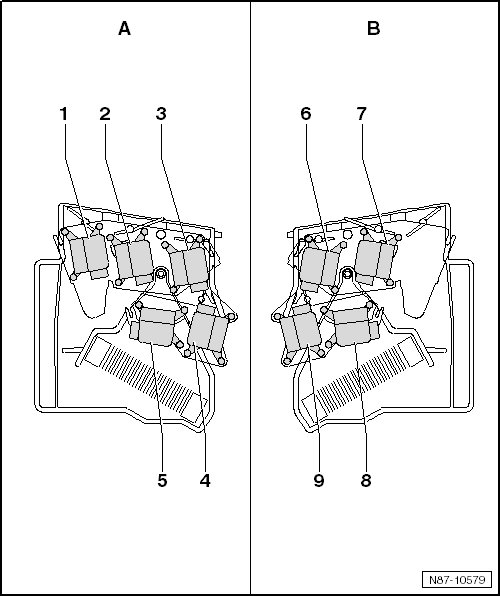

4 Zone A/C Unit Motor Locations
4 Zone A/C Unit Motor Locations
• - A - shows the motor location on the left side of the A/C unit.
• - B - shows the motor location on the right side of the A/C unit.

1 Defroster Door Motor (V107)
• With the Defroster Door Motor Position Sensor (G135)
• Removing and installing, refer to--> [ Defroster Door and Front Air Distribution, Manual A/C System ] Service and Repair
2 Left Side Vent Motor (V299)
• With Left Front Defrost/Upper Body Shut-Off Door Motor Position Sensor (G318)
• Removing and installing, refer to --> [ Left Side 4 Zone or Side Vent 2 Zone Climatronic ] Service and Repair
3 Left Vent Adjustment Motor (V110)
• With Left Front Upper Body Outlet Position Sensor (G387)
4 Left Footwell Door Motor (V108)
• With the Left Footwell Door Motor Position Sensor (G139)
• Removing and installing, refer to --> [ Left Footwell and Footwell Door, 2 and 4 Zone Climatronic ] Service and Repair
5 Left Temperature Door Motor (V158)
• With Left Temperature Regulator Door Motor Position Sensor (G220)
• Removing and installing, refer to --> [ Left Temperature Door ] Service and Repair
6 Right Center Vent Motor (V111)
• With Right Front Upper Body Outlet Position Sensor (G388)
• Removing and installing, refer to --> [ Right Center Vent and Right Side Vent ] Service and Repair
7 Right Side Vent Motor (V300)
• With Right Front Defrost/Upper Body Shut-Off Door Motor Position Sensor (G317)
• Removing and installing, refer to --> [ Right Center Vent and Right Side Vent ] Service and Repair
8 Right Temperature Door Motor (V159)
• With Right Temperature Regulator Door Motor Position Sensor (G221)
• Removing and installing, refer to --> [ Right Temperature Door ] Service and Repair
9 Right Footwell Door Motor (V109)
• With Right Footwell Door Motor Position Sensor (G140)
• Removing and installing, refer to --> [ Right Footwell Door and Right Temperature Door ] Service and Repair